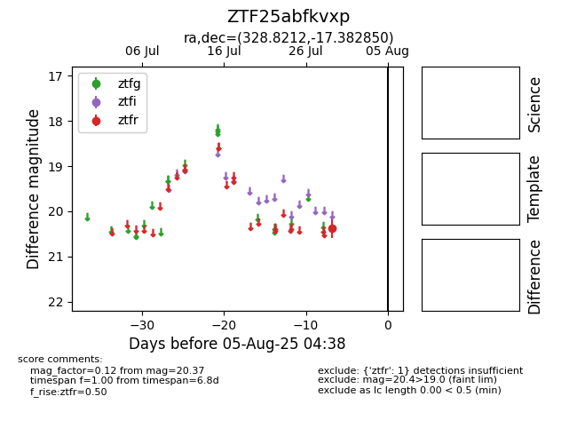

Target ZTF25abfkvxp at 2025-08-05 04:38, see:
FINK: fink-portal.org/ZTF25abfkvxp
Lasair: lasair-ztf.lsst.ac.uk/objects/ZTF25abfkvxp
ALeRCE: alerce.online/object/ZTF25abfkvxp
alt names
ZTF25abfkvxp (ztf,fink)
coordinates:
equatorial (ra, dec) = (328.8212,-17.38285)
galactic (l, b) = (36.9790,-48.31379)
photometry
last ztfr=20.37
1 ztfr detections
